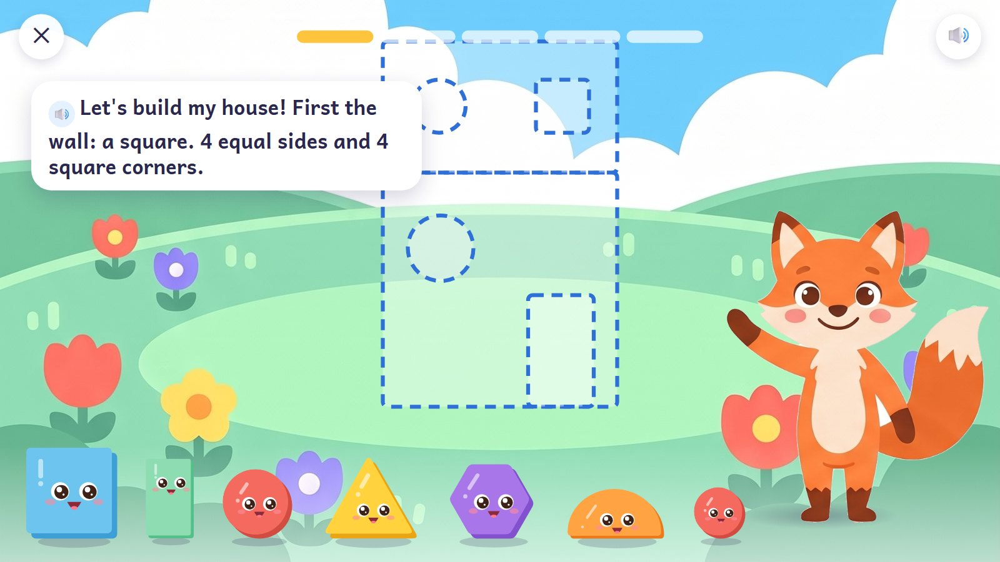
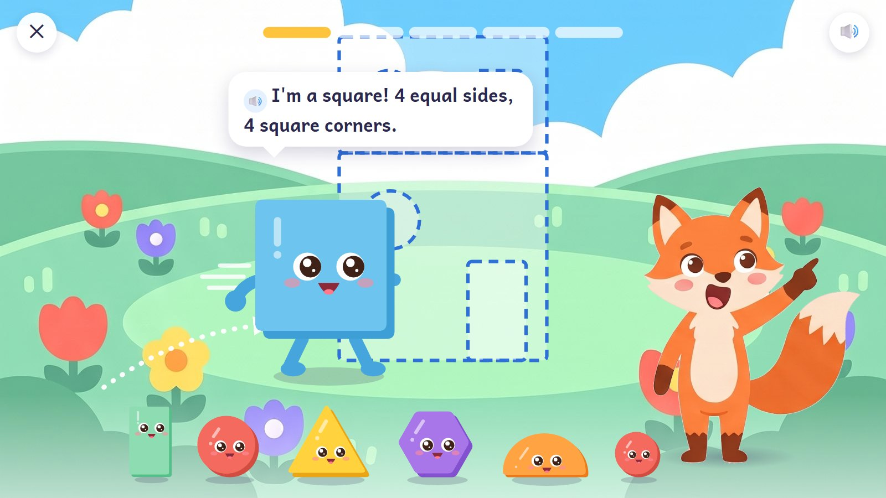
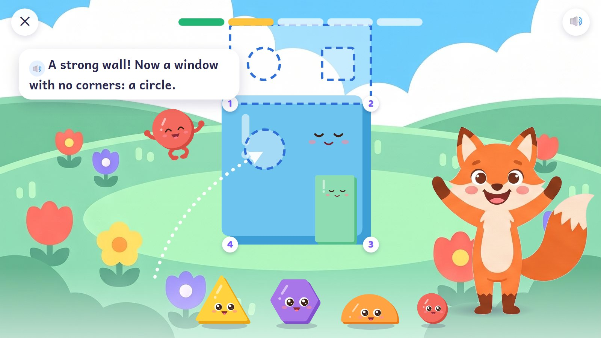
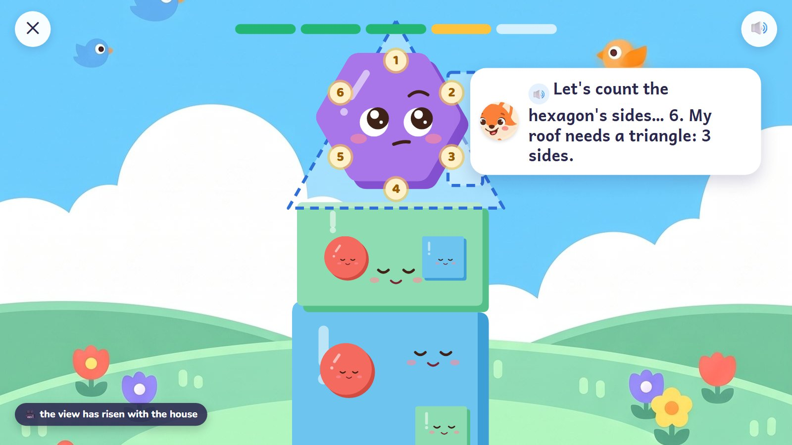
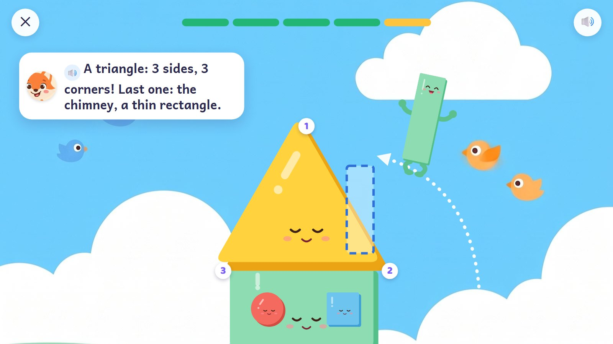
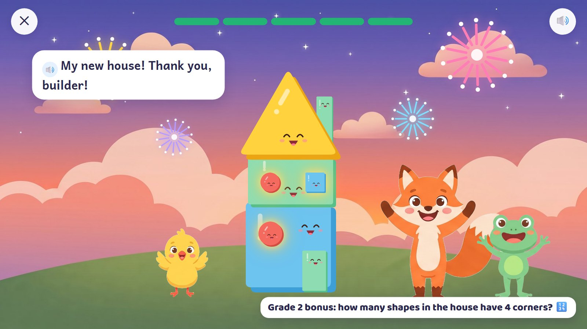

The fox's house is built from the ground up, and the view rises with it. The fox asks for each part by name and by what it is ("a square: 4 equal sides and 4 square corners"). A shape walks or hops to its place with its arms and legs out, then tucks them away and settles in, calm.
Grades 1–2 · ages 6–8 E23 Shape fitting + E22 Shape inspection
Skill: Recognise and describe 2-D shapes by sides, corners and square corners; put shapes together to make a figure. One activity is 5 rounds, about 90–150 seconds.
Shapes that walk and hop into place, a house that grows up the screen, lights on at dusk.
Up: the view rises as the house grows.
At dusk the windows light up, the fox and friends cheer, fireworks.

A dashed plan on the hill; the shapes wait in a row with their arms and legs tucked away. The fox asks for the wall by name and by what it is.
🔊 "Let's build my house! First the wall: a square. 4 equal sides and 4 square corners."
Behind the scenes: Names are spoken from the start (your answer). The hexagon and the semicircle are there to tempt.

The child drags the square. Its arms and legs come out and it walks to the plan, saying its name.
🔊 "I'm a square! 4 equal sides, 4 square corners."
Behind the scenes: Arms and legs appear only while a shape is moving.

The square is the wall now: no arms or legs, a small calm face, its corners counted 1–4. The door is in; the round window hops up, legs out.
🔊 "A strong wall! Now a window with no corners: a circle."
Behind the scenes: A placed shape keeps a small face, out of the way of windows and doors (your note: "retracted so it's not strange").

The view has risen with the house. The hexagon was tried on the roof: it sits there, tucked, counting its 6 sides.
🔊 "Let's count the hexagon's sides… 6. My roof needs a triangle: 3 sides."
Behind the scenes: The attempt stays and the child moves it back. The fox thinks.

The triangle is the roof, calm, its 3 corners counted. The chimney, a thin rectangle, hops up with its legs out.
🔊 "A triangle: 3 sides, 3 corners! Last one: the chimney, a thin rectangle."
Behind the scenes: Five rounds: the wall; the door; the windows; the upper floor and roof; the chimney.

Dusk: the whole house at once, the windows lit, the fox and friends cheering, fireworks.
🔊 "My new house! Thank you, builder!"
Behind the scenes: A Grade 2 bonus, asked exactly: "How many shapes in the house have 4 corners?"
The frames are mock-ups: Gemini's drawings (backgrounds, friends, things) and shapes and numbers drawn by code, put together as the app would at run time. In the app everything moves; here it stands still.
| What changes | Range |
|---|---|
| What to build | house, rocket, boat, castle, bridge, robot |
| Shapes | add pentagon, trapezium, rhombus |
| Turned shapes | squares and triangles at any angle |
| Pieces | 2 → 12; exact-cover puzzles (no gaps, no overlaps) later |
| Planned activities | E23 60 + E22 80 planned cards |
| Step | In this activity |
|---|---|
| 1. See it | The plan shows each piece's outline. |
| 2. Fill one part | Only the roof is missing. |
| 3. On your own | A plain outline: work out the pieces. |
| 4. Check it | "The fox says this isn't a rectangle, because it's a square. Is he right?" (A square is a rectangle too.) |
| 5. Word problem | "I need a window with no corners." |
| Mistake | Looks like | What happens (never red, never "wrong") |
|---|---|---|
| Corners counted as sides | or sides as corners | sides and corners light up in different colours |
| A turned square "isn't a square" | calls it a diamond | it turns back slowly and still has 4 equal sides |
| Picks by colour or size | the big blue one must be the wall | the plan asks by name and property only |
| A rhombus for the square | 4 equal sides but no square corners | "Check its corners: are they square?" |
Test robot: Measures each slot (sides, angles, size) and picks the shape from geometry alone. It checks each shape fits without gaps, and that every placed shape has tucked its arms and legs away.
← Back to the plan · ← Caterpillar Bridges · Owl's Fraction Race →